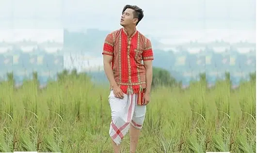

Kamchwlwi Borok
A colourful Tripuri shirt or jacket is worn by most men in Tripura. This shirt features a redcolour with beautiful designs and patterns running horizontally and vertically. Kamchwlwi Borok isa regular shirt but looks attractive when worn. It is a common traditional dress worn by men on a daily basis.